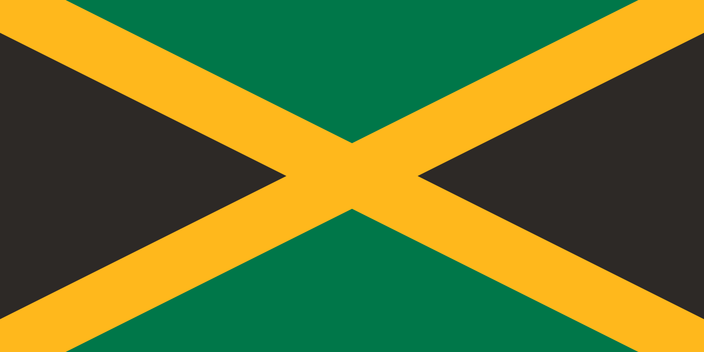

About the Mission
Our mandate, leadership, and the Bahamas-Jamaica relationship
The Consulate General of the Commonwealth of The Bahamas in Kingston serves as the principal diplomatic mission representing Bahamian interests in Jamaica, advancing bilateral relations, and providing essential services to Bahamian nationals.
Originally established as an Honorary Consulate around 2013, the mission was upgraded to a full Consulate General in 2024, reflecting the deepening of Bahamas-Jamaica relations and the growing Bahamian community in Jamaica. This elevation represents a significant commitment by the Government of The Bahamas to strengthening its diplomatic presence in the region.
With its expanded mandate, the Consulate General now provides a comprehensive range of consular services, citizen welfare programs, and diplomatic representation at regional and international bodies including CARICOM, the International Seabed Authority (ISA), and the Group of Latin American and Caribbean States (GRULAC). The mission also coordinates cultural programming that celebrates and strengthens the bonds between the Bahamian and Jamaican peoples.
Leadership
Mrs. Marina Thompson
Consul General
Mrs. Marina Thompson serves as Consul General of The Bahamas in Kingston, Jamaica, a post she has held since the mission's upgrade to full Consulate General status in 2024.
In March 2026, Mrs. Thompson was additionally appointed as the first Permanent Representative of The Bahamas to the International Seabed Authority (ISA), headquartered in Kingston.
Under Mrs. Thompson's leadership, the Consulate General has coordinated emergency evacuations during Hurricanes Beryl (2024) and Melissa (2025), launched the inaugural Majority Rule Day lecture series, and strengthened ties with the Bahamian student community at the University of the West Indies, Mona.
Mr. Andre Pinder
Deputy Consul General
Mr. Andre Pinder serves as Deputy Consul General, supporting the mission's consular operations, citizen welfare programs, and administrative functions.
Ministry of Foreign Affairs
The Consulate General operates under the authority of the Ministry of Foreign Affairs of The Commonwealth of The Bahamas, headquartered in Nassau.
Email: ministry@example.com
Phone: (242) 555-0198
Jamaica

The Consulate General is proud to operate in Kingston, Jamaica — a nation that shares deep historical, cultural, and diplomatic bonds with The Bahamas.
The Bahamas and Jamaica established formal diplomatic relations on 10 July 1973, shortly after Bahamian independence. Both nations are members of the Commonwealth of Nations and the Caribbean Community (CARICOM), and cooperate closely on matters of regional security, climate resilience, tourism, and education.
Jamaica serves as a vital hub for Caribbean diplomacy, hosting the International Seabed Authority, numerous CARICOM institutions, and diplomatic missions from across the globe.
Holidays Observed
The Consulate General is closed on the following public holidays observed by The Bahamas and Jamaica.